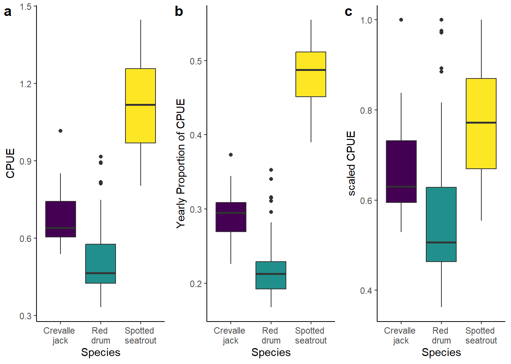
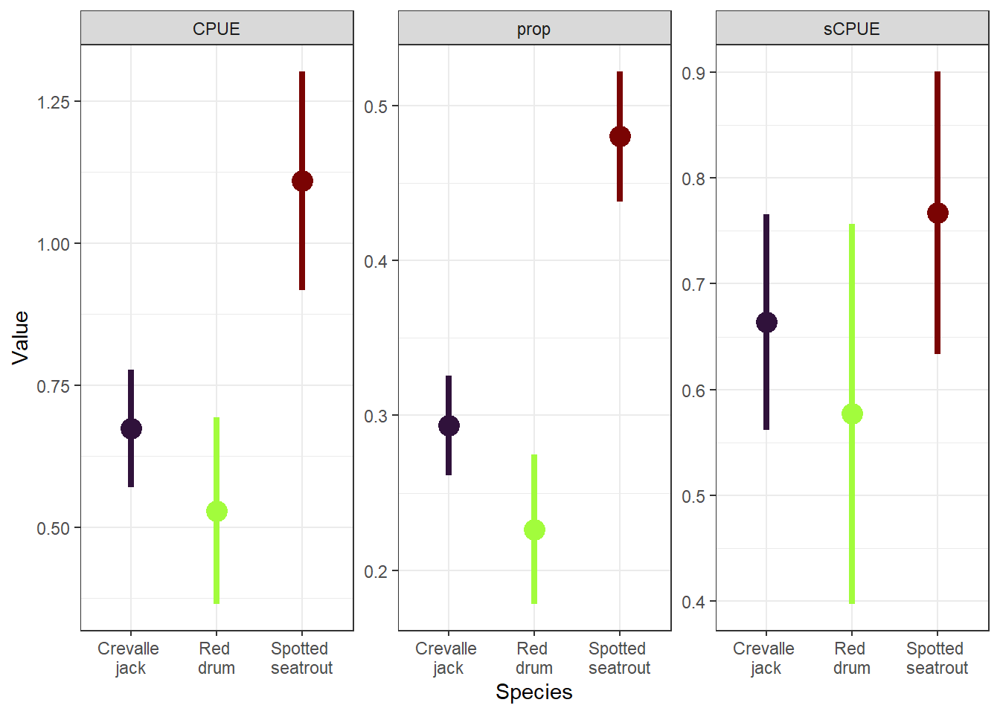
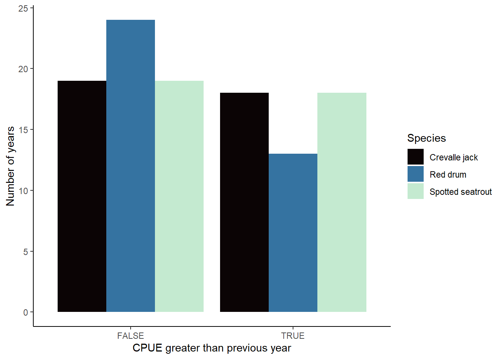

library(tidyverse)
## ── Attaching core tidyverse packages ──────────────────────── tidyverse 2.0.0 ──
## ✔ dplyr 1.1.4 ✔ readr 2.1.5
## ✔ forcats 1.0.0 ✔ stringr 1.5.1
## ✔ ggplot2 3.5.1 ✔ tibble 3.2.1
## ✔ lubridate 1.9.3 ✔ tidyr 1.3.1
## ✔ purrr 1.0.2
## ── Conflicts ────────────────────────────────────────── tidyverse_conflicts() ──
## ✖ dplyr::filter() masks stats::filter()
## ✖ dplyr::lag() masks stats::lag()
## ℹ Use the conflicted package (<http://conflicted.r-lib.org/>) to force all conflicts to become errors
df = read_csv('data/ENP_catch.csv')
## Rows: 38 Columns: 4
## ── Column specification ────────────────────────────────────────────────────────
## Delimiter: ","
## dbl (4): Year, Crevalle jack, Red drum, Spotted seatrout
##
## ℹ Use `spec()` to retrieve the full column specification for this data.
## ℹ Specify the column types or set `show_col_types = FALSE` to quiet this message.
str(df)
## spc_tbl_ [38 × 4] (S3: spec_tbl_df/tbl_df/tbl/data.frame)
## $ Year : num [1:38] 1980 1981 1982 1983 1984 ...
## $ Crevalle jack : num [1:38] 0.752 0.741 0.847 0.707 0.649 ...
## $ Red drum : num [1:38] 0.818 0.811 0.695 0.916 0.89 ...
## $ Spotted seatrout: num [1:38] 1.03 1.19 1.3 1.28 1.33 ...
## - attr(*, "spec")=
## .. cols(
## .. Year = col_double(),
## .. `Crevalle jack` = col_double(),
## .. `Red drum` = col_double(),
## .. `Spotted seatrout` = col_double()
## .. )
## - attr(*, "problems")=<externalptr>Homework 1 solutions
Instructions
Please, using quarto or rmarkdown, answer the questions below. You can use the class notes, the recommended books, and other web materials to help answer the questions. You can work on the homework in groups, but please independently submit pdf or html document containing answers and code.
In two weeks (09/30/24 by 11:59pm), please submit your pdf file to CANVAS using the following filename structure LastName_HW1_Filetype_Date (e.g., Santos_HW1_R_20230927). Again, you can share and work together on the code, but independently, submit your answers to the short answer questions in your own words and as markdown text under each question. Here are links to resources about quarto and rmarkdown.
Please reach out if you have any questions about the hw or how to make a pdf using quarto or rmarkdown.
Data for questions
For this homework, you will be using a fisheries dataset from Everglades National Park in Florida Bay. The dataset ENP_catch.csv contains catch per unit effort (CPUE) data for three species (Red drum, Spotted seatrout, and Crevalle Jack) species in Everglades National Park between between 1980-2017. This data is on github and should be downloaded to complete the homework.
Questions
- (2 pts) Load the ENP_catch.csv dataset as a dataframe or tibble. Short answer question 1: What are the dimension of the dataset?
The dimensions of the data are 38 rows x 4 cols
- (2 pts) Convert the tibble/dataframe so that there is a column for species and one for CPUE.
df_l = df |>
pivot_longer(`Crevalle jack`:`Spotted seatrout`,
names_to = 'species', values_to = 'CPUE')- (2 pts) Calculate the mean and SD of CPUE for each year. Short answer question 3: What are the years with the highest and lowest CPUE? Is the species with the highest and lowest CPUE the same for each year?
# calculate the mean and sd of CPUE and extract species with max and min per year
df_m = df_l |>
group_by(Year) |>
summarize(CPUE_m = mean(CPUE),
CPUE_sd = sd(CPUE),
max_sp = species[which.max(CPUE)],
min_sp = species[which.min(CPUE)])
# year with max CPUE
df_m$Year[which.max(df_m$CPUE_m)]
## [1] 1991
max(df_m$CPUE_m)
## [1] 0.9904098
#year with min CPUE
df_m$Year[which.min(df_m$CPUE_m)]
## [1] 2015
# species with maximum values
df_m$max_sp
## [1] "Spotted seatrout" "Spotted seatrout" "Spotted seatrout" "Spotted seatrout"
## [5] "Spotted seatrout" "Spotted seatrout" "Spotted seatrout" "Spotted seatrout"
## [9] "Spotted seatrout" "Spotted seatrout" "Spotted seatrout" "Spotted seatrout"
## [13] "Spotted seatrout" "Spotted seatrout" "Spotted seatrout" "Spotted seatrout"
## [17] "Spotted seatrout" "Spotted seatrout" "Spotted seatrout" "Spotted seatrout"
## [21] "Spotted seatrout" "Spotted seatrout" "Spotted seatrout" "Spotted seatrout"
## [25] "Spotted seatrout" "Spotted seatrout" "Spotted seatrout" "Spotted seatrout"
## [29] "Spotted seatrout" "Spotted seatrout" "Spotted seatrout" "Spotted seatrout"
## [33] "Spotted seatrout" "Spotted seatrout" "Spotted seatrout" "Spotted seatrout"
## [37] "Spotted seatrout" "Spotted seatrout"
# species with min values
df_m$min_sp
## [1] "Crevalle jack" "Crevalle jack" "Red drum" "Crevalle jack"
## [5] "Crevalle jack" "Crevalle jack" "Red drum" "Red drum"
## [9] "Red drum" "Red drum" "Red drum" "Red drum"
## [13] "Red drum" "Red drum" "Red drum" "Red drum"
## [17] "Red drum" "Red drum" "Red drum" "Red drum"
## [21] "Red drum" "Red drum" "Red drum" "Red drum"
## [25] "Red drum" "Red drum" "Red drum" "Red drum"
## [29] "Red drum" "Red drum" "Crevalle jack" "Crevalle jack"
## [33] "Red drum" "Red drum" "Red drum" "Red drum"
## [37] "Red drum" "Red drum"Short answer: The year with the highest mean CPUE is 0.9904098 in 1991. The year with the lowest mean CPUE is 0.5793073 in 2015. The species with the highest CPUE is always Spotted seatrout, but the minimum is both Crevalle Jack and Red drum depending on the year
- (4 pts) Add 2 new columns to the dataframe/tibble from question 2. One column should contain the proportion of the yearly total CPUE for each species. The other column should scale CPUE so that the yearly catch is relative to the maximum CPUE for that species.
df_n = df_l |>
group_by(Year) |>
mutate(prop = CPUE/sum(CPUE)) |>
group_by(species) |>
mutate(sCPUE = CPUE/max(CPUE)) |>
ungroup()
df_n
## # A tibble: 114 × 5
## Year species CPUE prop sCPUE
## <dbl> <chr> <dbl> <dbl> <dbl>
## 1 1980 Crevalle jack 0.752 0.289 0.740
## 2 1980 Red drum 0.818 0.315 0.892
## 3 1980 Spotted seatrout 1.03 0.396 0.711
## 4 1981 Crevalle jack 0.741 0.271 0.730
## 5 1981 Red drum 0.811 0.296 0.885
## 6 1981 Spotted seatrout 1.19 0.433 0.820
## 7 1982 Crevalle jack 0.847 0.298 0.834
## 8 1982 Red drum 0.695 0.245 0.759
## 9 1982 Spotted seatrout 1.30 0.458 0.899
## 10 1983 Crevalle jack 0.707 0.244 0.696
## # ℹ 104 more rows- (5 pts) Plot the metrics (proportion of total catch, CPUE, and scaled CPUE) for each species as a multi-panel plot (one metric per panel). The plot should show the distribution of data (e.g. boxplot, point range) and not use the default color scheme.
library(viridis)
## Loading required package: viridisLite
# using ggarrange
library(ggpubr)
a = ggplot(df_n, aes(species, CPUE, fill = species))+
geom_boxplot()+
scale_fill_viridis_d()+
labs(x = 'Species', y = 'CPUE')+
scale_x_discrete(labels = c('Crevalle \njack',
'Red \ndrum',
'Spotted \nseatrout'))+
theme_classic()
b = ggplot(df_n, aes(species, prop, fill = species))+
geom_boxplot()+
scale_fill_viridis_d()+
labs(x = 'Species', y = 'Yearly Proportion of CPUE')+
scale_x_discrete(labels = c('Crevalle \njack',
'Red \ndrum',
'Spotted \nseatrout'))+
theme_classic()
c = ggplot(df_n, aes(species, sCPUE, fill = species))+
geom_boxplot()+
scale_fill_viridis_d()+
labs(x = 'Species', y = 'scaled CPUE')+
scale_x_discrete(labels = c('Crevalle \njack',
'Red \ndrum',
'Spotted \nseatrout'))+
theme_classic()
ggarrange(a,b,c,
labels = 'auto',
legend = 'none',
nrow = 1)
# using facet_wrap
d = df_n |>
pivot_longer(CPUE:sCPUE, names_to = 'metric',
values_to = 'value')
ggplot(d, aes(species, value, color = species))+
stat_summary(fun = mean,
fun.min = function(x) mean(x) - sd(x),
fun.max = function(x) mean(x) + sd(x),
geom = "pointrange")+
scale_color_viridis_d(option = 'turbo')+
scale_x_discrete(labels = c('Crevalle \njack',
'Red \ndrum',
'Spotted \nseatrout'))+
labs(x = 'Species', y = 'Value')+
facet_wrap(~metric)+
theme_bw()+
theme(legend.position = 'none')
- (2 pts) Classify the CPUE for each species as a below average (< 40% quantile), average (between 40-60% quantile), or above average year.
df_q = df_n |>
group_by(species) |>
mutate(class = case_when(
CPUE < quantile(CPUE, 0.4) ~ 'Below average',
between(CPUE,
quantile(CPUE, 0.4),
quantile(CPUE, 0.6)) ~ 'Average',
CPUE > quantile(CPUE, 0.6) ~ 'Above average'
))
df_q
## # A tibble: 114 × 6
## # Groups: species [3]
## Year species CPUE prop sCPUE class
## <dbl> <chr> <dbl> <dbl> <dbl> <chr>
## 1 1980 Crevalle jack 0.752 0.289 0.740 Above average
## 2 1980 Red drum 0.818 0.315 0.892 Above average
## 3 1980 Spotted seatrout 1.03 0.396 0.711 Below average
## 4 1981 Crevalle jack 0.741 0.271 0.730 Above average
## 5 1981 Red drum 0.811 0.296 0.885 Above average
## 6 1981 Spotted seatrout 1.19 0.433 0.820 Above average
## 7 1982 Crevalle jack 0.847 0.298 0.834 Above average
## 8 1982 Red drum 0.695 0.245 0.759 Above average
## 9 1982 Spotted seatrout 1.30 0.458 0.899 Above average
## 10 1983 Crevalle jack 0.707 0.244 0.696 Above average
## # ℹ 104 more rows- (5 pts) Create a conditional (i.e.
TRUE/FALSE) vector to compare if CPUE is higher compared to the previous year before for each species.
Hint - this can be done with a for loop
# for loop
df_q$comp_fl = NA
yrs = unique(df_q$Year)
for (i in 2:length(yrs)){
df_q$comp_fl[df_q$species == 'Crevalle jack' & df_q$Year == yrs[i]] =
df_q$CPUE[df_q$species == 'Crevalle jack'& df_q$Year == yrs[i]] >
df_q$CPUE[df_q$species == 'Crevalle jack'& df_q$Year == yrs[i-1]]
df_q$comp_fl[df_q$species == 'Red drum'& df_q$Year == yrs[i]] =
df_q$CPUE[df_q$species == 'Red drum'& df_q$Year == yrs[i]] >
df_q$CPUE[df_q$species == 'Red drum'& df_q$Year == yrs[i-1]]
df_q$comp_fl[df_q$species == 'Spotted seatrout'& df_q$Year == yrs[i]] =
df_q$CPUE[df_q$species == 'Spotted seatrout'& df_q$Year == yrs[i]] >
df_q$CPUE[df_q$species == 'Spotted seatrout'& df_q$Year == yrs[i-1]]
}
# dplyr
df_q = df_q |>
group_by(species) |>
mutate(comp_dp = CPUE > lag(CPUE))
df_q
## # A tibble: 114 × 8
## # Groups: species [3]
## Year species CPUE prop sCPUE class comp_fl comp_dp
## <dbl> <chr> <dbl> <dbl> <dbl> <chr> <lgl> <lgl>
## 1 1980 Crevalle jack 0.752 0.289 0.740 Above average NA NA
## 2 1980 Red drum 0.818 0.315 0.892 Above average NA NA
## 3 1980 Spotted seatrout 1.03 0.396 0.711 Below average NA NA
## 4 1981 Crevalle jack 0.741 0.271 0.730 Above average FALSE FALSE
## 5 1981 Red drum 0.811 0.296 0.885 Above average FALSE FALSE
## 6 1981 Spotted seatrout 1.19 0.433 0.820 Above average TRUE TRUE
## 7 1982 Crevalle jack 0.847 0.298 0.834 Above average TRUE TRUE
## 8 1982 Red drum 0.695 0.245 0.759 Above average FALSE FALSE
## 9 1982 Spotted seatrout 1.30 0.458 0.899 Above average TRUE TRUE
## 10 1983 Crevalle jack 0.707 0.244 0.696 Above average FALSE FALSE
## # ℹ 104 more rows- (3 pts) Plot the count of years where CPUE is higher than the previous year and the count of years where CPUE is lower than the previous year for each species.
d = df_q |>
drop_na() |>
group_by(species) |>
count(comp_dp)
ggplot(d, aes(comp_dp, n, fill = species))+
geom_col(position = 'dodge')+
scale_fill_viridis_d(option = 'mako', end = 0.95)+
labs(x = 'CPUE greater than previous year',
y = 'Number of years',
fill = 'Species')+
theme_classic()